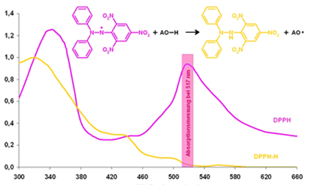

-
Hemikalije i reagensi:
- - Troloks (6-hidroksi-2,5,7,8-tetrametilkroman-2-karboksilna kiselina), C14H18O4, “Sigma Aldrich”;
- - Etanol 96%, C2H6O, “Semikem”, Sarajevo, Bosna i Hercegovina;
- - DPPH radikal (2,2-difenil-1-pikrilhidrazil), C18H12N5O6, 85%, “HIMEDIA”;
- - Destilirana voda.
-
Pribor i oprema:
- - Perkin-Elmer Lambda 25 UV/Vis spektrofotometar;
- - Vaga Mettler Toledo AB 104, min=10 mg, max=110g;
- - Vortex miješalica – WVR;
- - Laboratorijsko posuđe (odmjerni sudovi, čaše, pipete).
Ispitivani uzorci
U ovom radu analizirano je 50 uzoraka pčelinjeg meda i određena njihova antioksidativna aktivnost (AA), koja je izražena u mikromolima troloks ekvivalenata po masi meda (µM TE/100 g). Analizirani su uzorci meda različitih vrsta, prikupljeni sa različitih lokacija iz Bosne i Hercegovine, a godine proizvodnje su bile 2013, 2014 i 2015.
Priprema uzoraka
Popis analiziranih uzoraka pčelinjeg meda prikazan je u Tabeli 3.. Otopine uzoraka meda pravljene su u ependorficama, otapanjem ≈0,2 g meda u 1 ml vode (za pedeset uzoraka), a za dva uzorka meda sa nižom AA, otopine su pripremane otapanjem ≈0,4 g meda u 1 ml vode. Otapanje je ubrzano pomoću Vortex miješalice.
Opis metode
Od otopine troloksa koncentracije 1 mg/ml pripremljena je serija otopina koncentracija 0,01; 0,02; 0,04; 0,06; 0,1 i 0,12 mg/ml. Alikvot od 100 µl svake ove koncentracije pomiješan je sa 1,0 ml radne otopine DPPH•. Nakon 30 minuta snimljene su apsorbanse pri 528 nm i konstruirana kalibraciona kriva RI(%)=f (γtroloks (mg/ml))
Snimanje apsorpcionog spektra DPPH• i priprema kalibracionog pravca sa troloksom
Za određivanje AA uzoraka pčelinjeg meda, pripremljena je koncentrirana otopina DPPH• otapanjem 30 mg DPPH• u 96%-tnom etanolu u odmjernom sudu od 100 ml. Nakon otapanja sud je dopunjen do oznake sa etanolom. Radna otopina DPPH• je pripremana razrijeđivanjem koncentrirane otopine DPPH• u omjeru 1:5 sa 96 % etanolom, za koju je snimljen apsorpcioni spektar u području talasnih dužina 400-800 nm. Maksimalna apsorpcija radne otopine DPPH• očitana pri 528 nm iznosila je 1,1382.
Analiza uzoraka pčelinjeg meda
Određivanje AA u uzorcima pčelinjeg meda vršeno je spektrofotometrijski, na spektrofotometru Perkin - Elmer Lambda 25. Na 1 ml radne otopine DPPH• (1:5), dodano je 100 µl otopine pčelinjeg meda, izmiješano i ostavljeno na tamno mjesto da stoji oko 30 minuta. Zavisno od AA uzorka pčelinjeg meda boja otopine je prelazila iz ljubičaste (boja DPPH•) ka žutoj (boja DPPH-H oblika).
|

Promjena apsorpcije DPPH• pri reakciji sa antioksidansima |
Nakon 30 minuta izmjerene su apsorbanse otopina, na 528 nm. Svi uzorci su rađeni u tri ponavljanja. Nakon izmjerenih apsorbansi svih uzoraka, izračunate su relativne inhibicije (RI, %) uzoraka meda (odnosno njihovih antioksidanasa) na DPPH•.
RI(%)= [(A0 – At) / A0] x 100
- gdje je:
- A0 = apsorbansa otopine DPPH• bez antioksidansa na početku mjerenja (t=0),
- At = apsorbansa otopine DPPH• sa antioksidansima iz uzorka/standarda nakon 30 min.
Za dobivene vrijednosti RI uzoraka meda, iz jednačine kalibracionog pravca izračunate su AA i izražene u ekvivalentima troloksa po masi meda (µM TE/100 g).